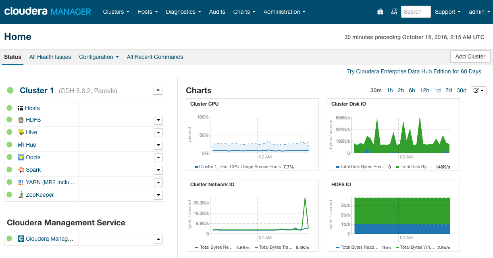
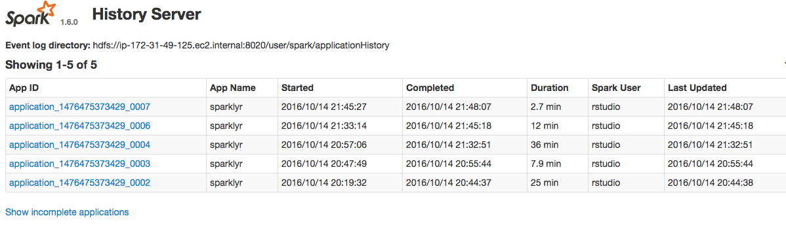
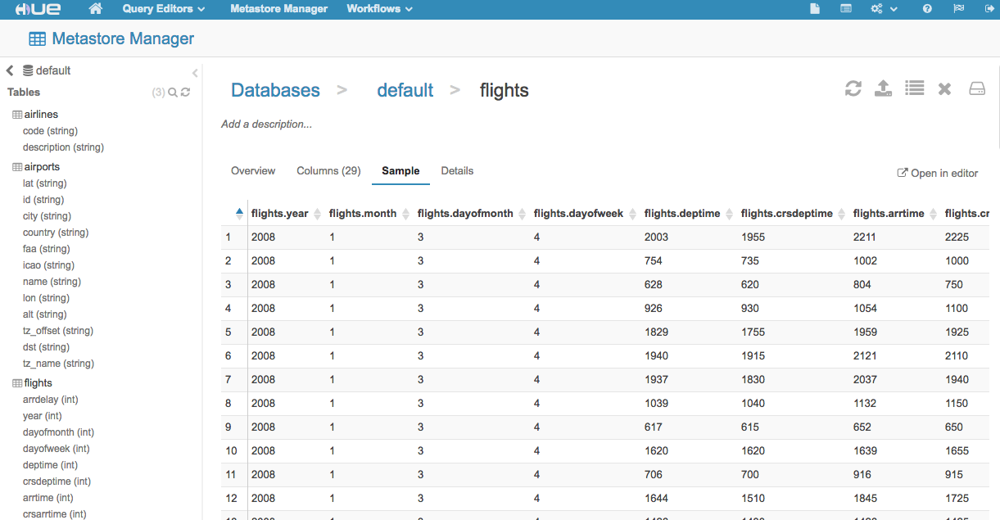
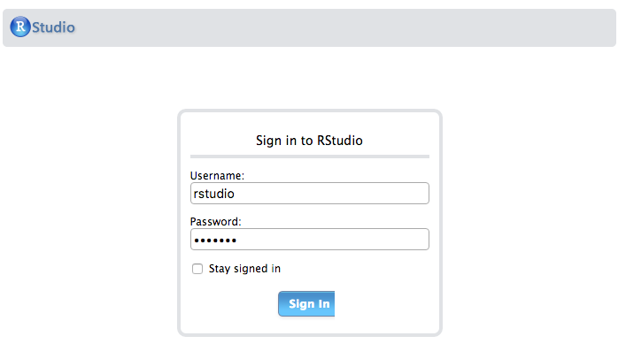
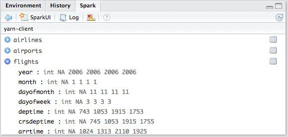
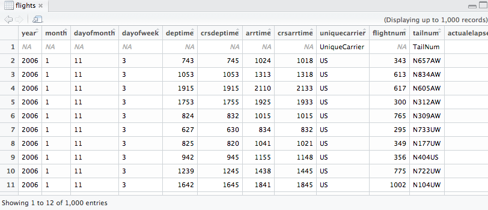
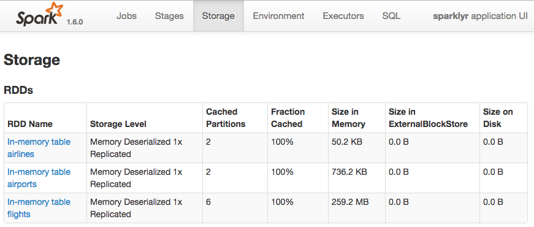
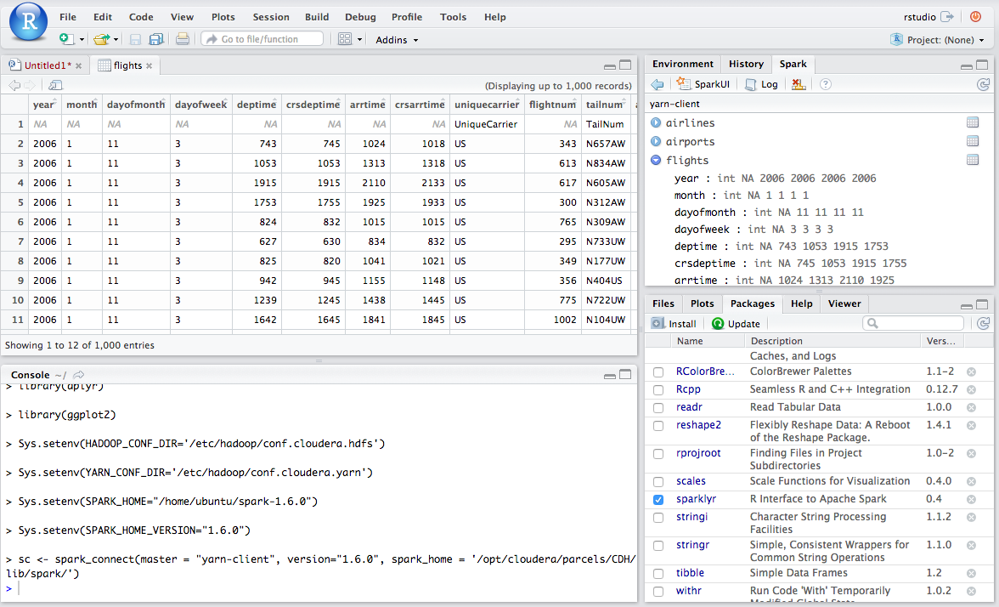
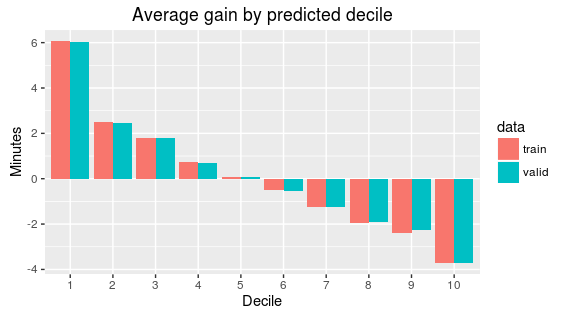
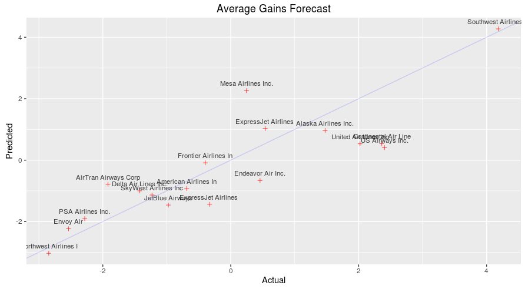

sudo sh -c 'echo "deb http://cran.rstudio.com/bin/linux/ubuntu trusty/" >> /etc/apt/sources.list'
gpg --keyserver keyserver.ubuntu.com --recv-key 0x517166190x51716619e084dab9
gpg -a --export 0x517166190x51716619e084dab9 | sudo apt-key add -
sudo apt-get update
sudo apt-get install r-base
sudo apt-get install gdebi-core
sudo apt-get -y install libcurl4-gnutls-dev
sudo apt-get -y install libssl-devUsing sparklyr with an Apache Spark cluster
Summary
This document demonstrates how to use sparklyr with an Cloudera Hadoop & Spark cluster. Data are downloaded from the web and stored in Hive tables on HDFS across multiple worker nodes. RStudio Server is installed on the master node and orchestrates the analysis in spark.
Cloudera Cluster
This demonstration is focused on adding RStudio integration to an existing Cloudera cluster. The assumption will be made that there no aid is needed to setup and administer the cluster.
CDH 5
We will start with a Cloudera cluster CDH version 5.8.2 (free version) with an underlaying Ubuntu Linux distribution.

Spark 1.6
The default Spark 1.6.0 parcel is in installed and running

Hive data
For this demo, we have created and populated 3 tables in Hive. The table names are: flights, airlines and airports. Using Hue, we can see the loaded tables. For the links to the data files and their Hive import scripts please see Appendix A.

Install RStudio
The latest version of R is needed. In Ubuntu, the default core R is not the latest so we have to update the source list. We will also install a few other dependencies.
We will install the preview version of RStudio Server
wget https://s3.amazonaws.com/rstudio-dailybuilds/rstudio-server-1.0.40-amd64.deb
sudo gdebi rstudio-server-1.0.49-amd64.debCreate and configure a User
Create a user called rstudio that will perform the data analysis.
sudo adduser rstudioTo ease security restriction in this demo, we will add the new user to the default super group defined in the dfs.permissions.superusergroup setting in CDH
sudo groupadd supergroup
sudo usermod -a -G supergroup rstudioConnect to Spark
Log in to RStudio Server by pointing a browser at your master node IP:8787.

Set the environment variable SPARK_HOME and then run spark_connect. After connecting you will be able to browse the Hive metadata in the RStudio Server Spark pane.
library(sparklyr)
library(dplyr)
library(ggplot2)
sc <- spark_connect(master = "yarn-client", version="1.6.0", spark_home = '/opt/cloudera/parcels/CDH/lib/spark/')Once you are connected, you will see the Spark pane appear along with your hive tables.

You can inspect your tables by clicking on the data icon.

This is what the tables look like loaded in Spark via the History Server Web UI (port 18088)

Data analysis
Is there evidence to suggest that some airline carriers make up time in flight? This analysis predicts time gained in flight by airline carrier.

Cache the tables into memory
Use tbl_cache to load the flights table into memory. Caching tables will make analysis much faster. Create a dplyr reference to the Spark DataFrame.
# Cache flights Hive table into Spark
tbl_cache(sc, 'flights')
flights_tbl <- tbl(sc, 'flights')
# Cache airlines Hive table into Spark
tbl_cache(sc, 'airlines')
airlines_tbl <- tbl(sc, 'airlines')
# Cache airports Hive table into Spark
tbl_cache(sc, 'airports')
airports_tbl <- tbl(sc, 'airports')Create a model data set
Filter the data to contain only the records to be used in the fitted model. Join carrier descriptions for reference. Create a new variable called gain which represents the amount of time gained (or lost) in flight.
# Filter records and create target variable 'gain'
model_data <- flights_tbl %>%
filter(!is.na(arrdelay) & !is.na(depdelay) & !is.na(distance)) %>%
filter(depdelay > 15 & depdelay < 240) %>%
filter(arrdelay > -60 & arrdelay < 360) %>%
filter(year >= 2003 & year <= 2007) %>%
left_join(airlines_tbl, by = c("uniquecarrier" = "code")) %>%
mutate(gain = depdelay - arrdelay) %>%
select(year, month, arrdelay, depdelay, distance, uniquecarrier, description, gain)
# Summarize data by carrier
model_data %>%
group_by(uniquecarrier) %>%
summarize(description = min(description), gain=mean(gain),
distance=mean(distance), depdelay=mean(depdelay)) %>%
select(description, gain, distance, depdelay) %>%
arrange(gain)Source: query [?? x 4]
Database: spark connection master=yarn-client app=sparklyr local=FALSE
description gain distance depdelay
<chr> <dbl> <dbl> <dbl>
1 ATA Airlines d/b/a ATA -5.5679651 1240.7219 61.84391
2 Northwest Airlines Inc. -3.1134556 779.1926 48.84979
3 Envoy Air -2.2056576 437.0883 54.54923
4 PSA Airlines Inc. -1.9267647 500.6955 55.60335
5 ExpressJet Airlines Inc. (1) -1.5886314 537.3077 61.58386
6 JetBlue Airways -1.3742524 1087.2337 59.80750
7 SkyWest Airlines Inc. -1.1265678 419.6489 54.04198
8 Delta Air Lines Inc. -0.9829374 956.9576 50.19338
9 American Airlines Inc. -0.9631200 1066.8396 56.78222
10 AirTran Airways Corporation -0.9411572 665.6574 53.38363
# ... with more rowsTrain a linear model
Predict time gained or lost in flight as a function of distance, departure delay, and airline carrier.
# Partition the data into training and validation sets
model_partition <- model_data %>%
sdf_partition(train = 0.8, valid = 0.2, seed = 5555)
# Fit a linear model
ml1 <- model_partition$train %>%
ml_linear_regression(gain ~ distance + depdelay + uniquecarrier)
# Summarize the linear model
summary(ml1)Call: ml_linear_regression(., gain ~ distance + depdelay + uniquecarrier)
Deviance Residuals: (approximate):
Min 1Q Median 3Q Max
-302.343 -5.669 2.714 9.832 104.130
Coefficients:
Estimate Std. Error t value Pr(>|t|)
(Intercept) -1.26566581 0.10385870 -12.1864 < 2.2e-16 ***
distance 0.00308711 0.00002404 128.4155 < 2.2e-16 ***
depdelay -0.01397013 0.00028816 -48.4812 < 2.2e-16 ***
uniquecarrier_AA -2.18483090 0.10985406 -19.8885 < 2.2e-16 ***
uniquecarrier_AQ 3.14330242 0.29114487 10.7964 < 2.2e-16 ***
uniquecarrier_AS 0.09210380 0.12825003 0.7182 0.4726598
uniquecarrier_B6 -2.66988794 0.12682192 -21.0523 < 2.2e-16 ***
uniquecarrier_CO -1.11611186 0.11795564 -9.4621 < 2.2e-16 ***
uniquecarrier_DL -1.95206198 0.11431110 -17.0767 < 2.2e-16 ***
uniquecarrier_EV 1.70420830 0.11337215 15.0320 < 2.2e-16 ***
uniquecarrier_F9 -1.03178176 0.15384863 -6.7065 1.994e-11 ***
uniquecarrier_FL -0.99574060 0.12034738 -8.2739 2.220e-16 ***
uniquecarrier_HA -1.16970713 0.34894788 -3.3521 0.0008020 ***
uniquecarrier_MQ -1.55569040 0.10975613 -14.1741 < 2.2e-16 ***
uniquecarrier_NW -3.58502418 0.11534938 -31.0797 < 2.2e-16 ***
uniquecarrier_OH -1.40654797 0.12034858 -11.6873 < 2.2e-16 ***
uniquecarrier_OO -0.39069404 0.11132164 -3.5096 0.0004488 ***
uniquecarrier_TZ -7.26285217 0.34428509 -21.0955 < 2.2e-16 ***
uniquecarrier_UA -0.56995737 0.11186757 -5.0949 3.489e-07 ***
uniquecarrier_US -0.52000028 0.11218498 -4.6352 3.566e-06 ***
uniquecarrier_WN 4.22838982 0.10629405 39.7801 < 2.2e-16 ***
uniquecarrier_XE -1.13836940 0.11332176 -10.0455 < 2.2e-16 ***
uniquecarrier_YV 3.17149538 0.11709253 27.0854 < 2.2e-16 ***
---
Signif. codes: 0 ‘***’ 0.001 ‘**’ 0.01 ‘*’ 0.05 ‘.’ 0.1 ‘ ’ 1
R-Squared: 0.02301
Root Mean Squared Error: 17.83Assess model performance
Compare the model performance using the validation data.
# Calculate average gains by predicted decile
model_deciles <- lapply(model_partition, function(x) {
sdf_predict(ml1, x) %>%
mutate(decile = ntile(desc(prediction), 10)) %>%
group_by(decile) %>%
summarize(gain = mean(gain)) %>%
select(decile, gain) %>%
collect()
})
# Create a summary dataset for plotting
deciles <- rbind(
data.frame(data = 'train', model_deciles$train),
data.frame(data = 'valid', model_deciles$valid),
make.row.names = FALSE
)
# Plot average gains by predicted decile
deciles %>%
ggplot(aes(factor(decile), gain, fill = data)) +
geom_bar(stat = 'identity', position = 'dodge') +
labs(title = 'Average gain by predicted decile', x = 'Decile', y = 'Minutes')
Visualize predictions
Compare actual gains to predicted gains for an out of time sample.
# Select data from an out of time sample
data_2008 <- flights_tbl %>%
filter(!is.na(arrdelay) & !is.na(depdelay) & !is.na(distance)) %>%
filter(depdelay > 15 & depdelay < 240) %>%
filter(arrdelay > -60 & arrdelay < 360) %>%
filter(year == 2008) %>%
left_join(airlines_tbl, by = c("uniquecarrier" = "code")) %>%
mutate(gain = depdelay - arrdelay) %>%
select(year, month, arrdelay, depdelay, distance, uniquecarrier, description, gain, origin,dest)
# Summarize data by carrier
carrier <- sdf_predict(ml1, data_2008) %>%
group_by(description) %>%
summarize(gain = mean(gain), prediction = mean(prediction), freq = n()) %>%
filter(freq > 10000) %>%
collect
# Plot actual gains and predicted gains by airline carrier
ggplot(carrier, aes(gain, prediction)) +
geom_point(alpha = 0.75, color = 'red', shape = 3) +
geom_abline(intercept = 0, slope = 1, alpha = 0.15, color = 'blue') +
geom_text(aes(label = substr(description, 1, 20)), size = 3, alpha = 0.75, vjust = -1) +
labs(title='Average Gains Forecast', x = 'Actual', y = 'Predicted')
Some carriers make up more time than others in flight, but the differences are relatively small. The average time gains between the best and worst airlines is only six minutes. The best predictor of time gained is not carrier but flight distance. The biggest gains were associated with the longest flights.